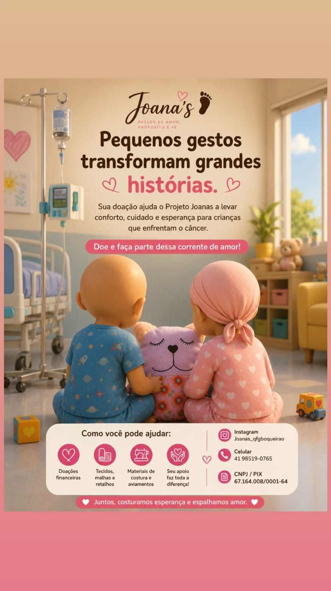
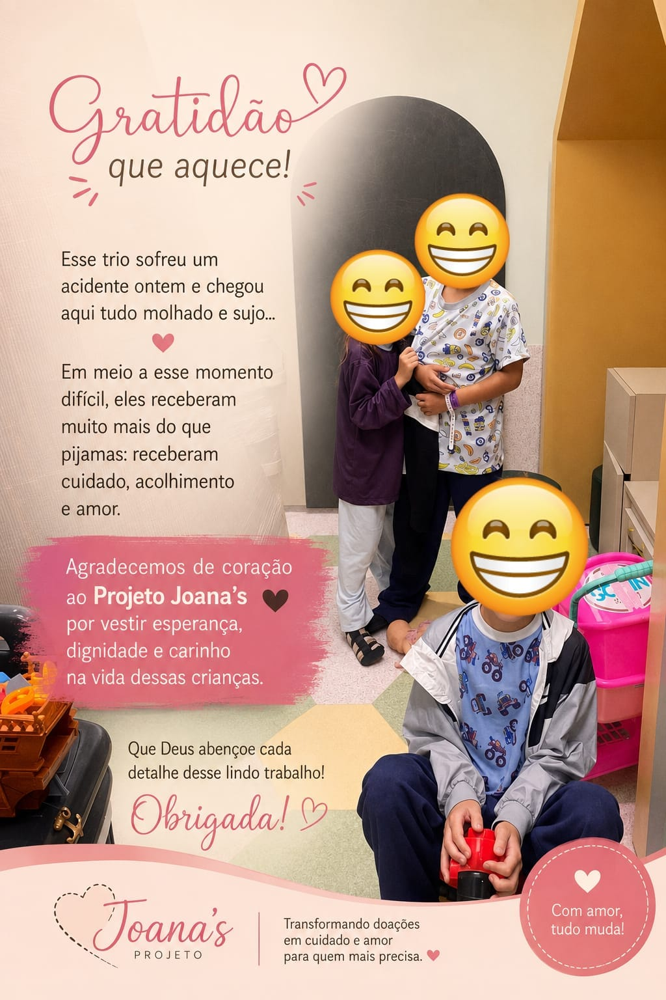
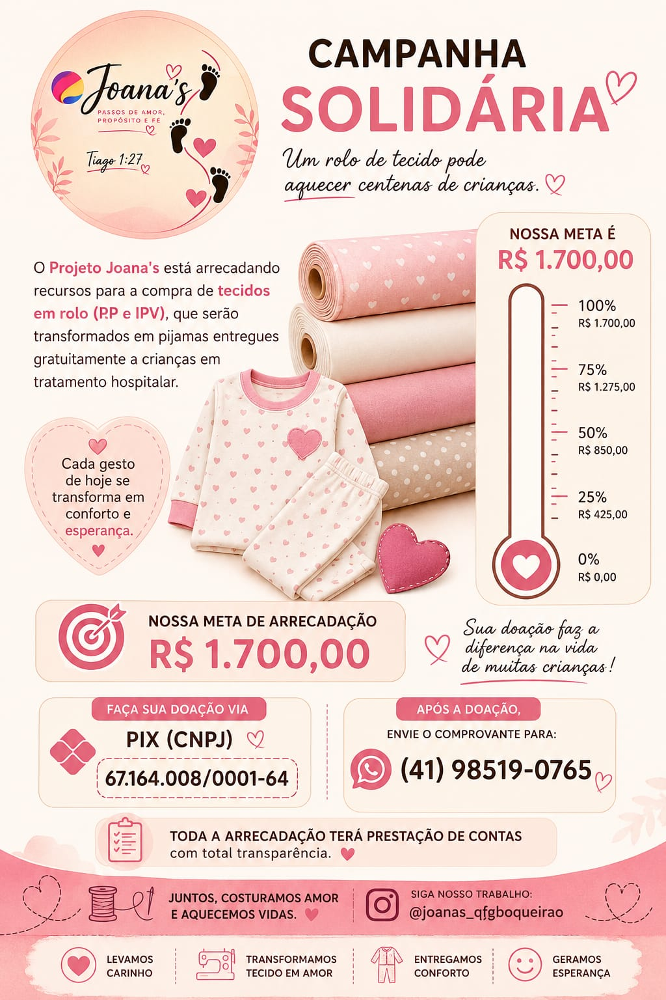
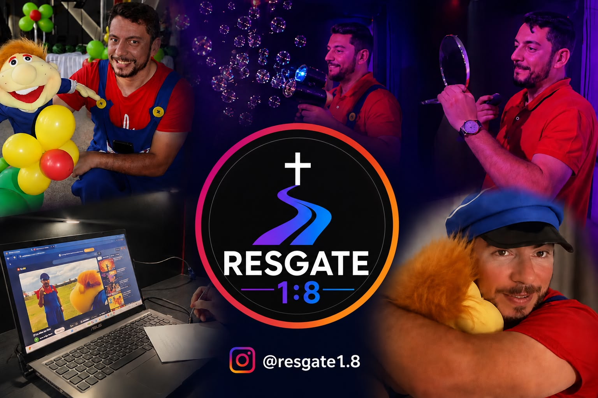
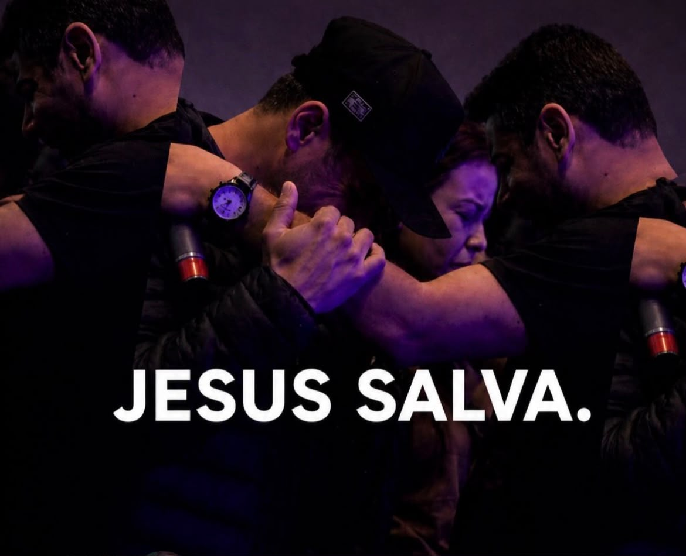
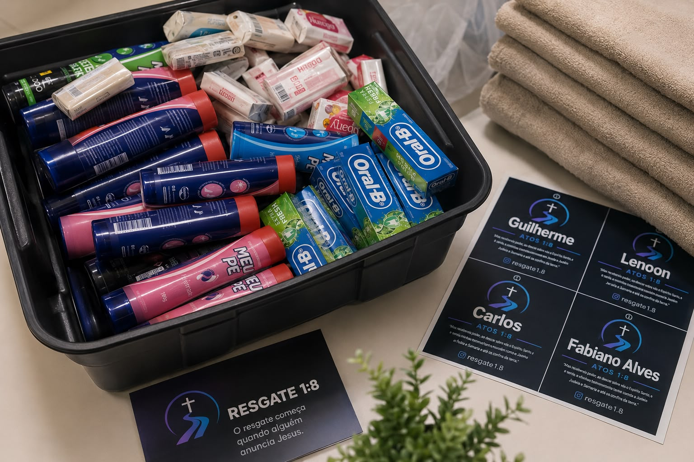

🤝 Nossos Projetos
Projeto Joana´s



Projeto Resgate 1:8



O Projeto Resgate 1:8 é uma iniciativa dedicada a preparar cristãos para viver o evangelismo de forma prática, capacitando pessoas para anunciar Jesus, servir no campo missionário e fortalecer a cultura evangelística nas igrejas e comunidades.
Inspirado em Atos 1:8, o projeto tem como propósito cumprir a Grande Comissão por meio da formação de discípulos comprometidos em testemunhar Cristo onde estiverem.
Mais do que um curso, o Resgate 1:8 busca desenvolver uma cultura de evangelismo, oferecendo treinamentos, capacitações, ações missionárias, ações sociais a grupos e comunidades carentes e experiências práticas e recursos que ajudem pessoas a compartilhar o Evangelho com amor, coragem e fidelidade às Escrituras.
Seu nome nasceu a partir do testemunho de seu fundador, Pastor Jean Felipe Matos, que experimentou o resgate transformador de Jesus Cristo após anos afastado da fé e como usuário de drogas. Essa experiência deu origem ao propósito que permanece até hoje: preparar pessoas para que outras vidas também sejam alcançadas pelo Evangelho.
O número 1:8 faz referência ao texto de Atos 1:8:
Esse versículo resume a essência do projeto: receber, preparar e enviar discípulos para testemunhar de Cristo até os confins da terra.
O Resgate 1:8 está fundamentado em três pilares:
- Preparar: Capacitar cristãos por meio de cursos, treinamentos e experiências práticas de evangelismo.
- Enviar: Incentivar e mobilizar pessoas para servir no campo missionário e fortalecer ações evangelísticas.
- Resgatar: Anunciar Jesus Cristo, crendo que vidas são transformadas pelo poder do Evangelho.
Porque o resgate começa quando alguém anuncia Jesus a alguém!